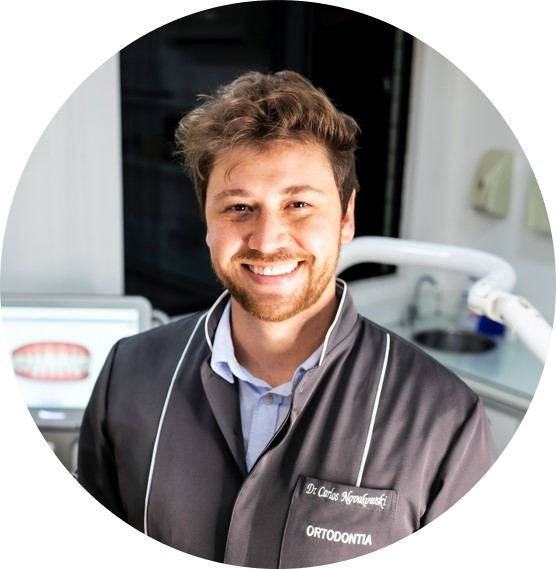

Dr. Emily Pearson
DDS
Dr. Emily Pearson is a highly regarded dentist with over two decades of experience in general and cosmetic dentistry. She is known for her commitment to patient care and has earned the trust of her community. Dr. Pearson is a recipient of the "Distinguished Service Award" from the American Dental Association for her outstanding contributions to the field. Her gentle chairside manner and dedication to staying current with the latest dental advancements make her a go-to choice for families seeking exceptional oral healthcare.

Dr. Carlos Novakowski
Dr. Carlos Novakowski is an accomplished orthodontist who holds a Doctor of Dental Medicine (DMD) degree along with a Master of Science (MS) in Orthodontics. He has transformed the smiles of countless patients with his expertise in orthodontic treatments. Dr. Novakowski is a recipient of the "Orthodontic Excellence Award" from the American Association of Orthodontists, recognizing his exceptional skill in creating beautiful, well-aligned smiles. Patients admire his attention to detail and the life-changing results he achieves.
Dr. Carlos Novakowski
DMD, MS, Orthodontist
Dr. Carlos Novakowski is an accomplished orthodontist who holds a Doctor of Dental Medicine (DMD) degree along with a Master of Science (MS) in Orthodontics. He has transformed the smiles of countless patients with his expertise in orthodontic treatments. Dr. Novakowski is a recipient of the "Orthodontic Excellence Award" from the American Association of Orthodontists, recognizing his exceptional skill in creating beautiful, well-aligned smiles. Patients admire his attention to detail and the life-changing results he achieves.
Dr. Sarah Rodriguez
PhD, Pediatric Dentist
Dr. Sarah Rodriguez is a dedicated pediatric dentist who holds both a Doctor of Dental Medicine (DMD) degree and a Doctor of Philosophy (PhD) in Pediatric Dentistry. Her passion for working with children and her contributions to dental research have earned her the "Outstanding Pediatric Dentist Award" from the National Association of Pediatric Dentists. Dr. Rodriguez's warm and friendly approach to pediatric dental care has made her a favorite among parents and children alike, providing a nurturing environment for young patients to develop lifelong oral health habits.